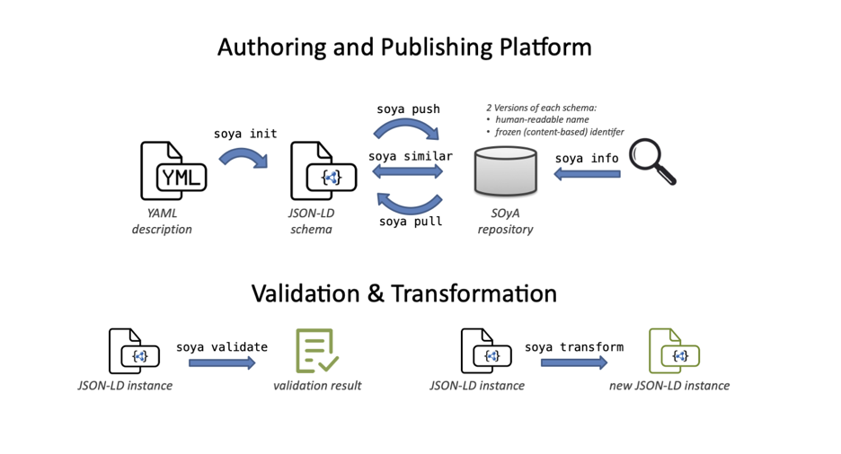
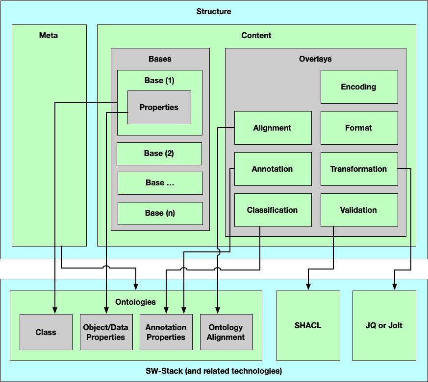

This specification is not a W3C Standard nor is it on the W3C Standards Track. Learn more about W3C Community and Business Groups. GitHub Issues are preferred for discussion of this specification.
History
-
Version 0.1: 19 October 2021 (initial draft, link)
-
Version 0.2: 28 February 2022 (current version)
1. Introduction
SOyA is a data model authoring and publishing platform and also provides functionalities for validation and transformation. It includes a libray for integration in other projects, a command line tool for interactive data model management, and an online repository for hosting data models.

Figure 1: Building blocks in SOyA
1.1. Terminology
This document uses the following terms as defined in external specifications and defines terms specific to SOyA.
- Attribute
-
in a Base a single field with a name and associated type
in RDF: a single data type or object property - Base
-
has a name and a list of Attributes with associated type
in RDF: an RDF Class with one or more properties - DRI
-
A Decentralized Resource Identifier represents a content based address for a [=terms/structure]. Within SOyA Multihash [MULTIHASH] (default:
sha2-256) is used for hashing a JSON object and Multibase [MULTIBASE] (default:base58-btc) for encoding the hash value. - Instance
-
is a data record (e.g. an data describing an employee) with a set of properties as defined in a Base or Structure
in RDF: instance of an RDF Class - Overlay
-
additional information about a Base
in RDF: annotation properties attached to an RDF Class or Property - Repository
-
online storage for Structures with versioning capabilities
- Structure
1.2. Design Goals and Rationale
SOyA satisfies the following design goals:
-
Open: all components are open source, free to use (incl. commercially), and publicly accessible (Github, public Repository)
-
Extensible: design is inherently supposed to be extended through own definitions, extensions, concepts
-
Compatible: allow seamlessly switching between data formats to use the best technology for the given use case
-
Ease of use: make it as simple as possible (but not simpler!) through documentation (e.g., tutorials, examples), authoring tools (e.g., YAML for initial description), UI components (web form), and integration (e.g., Semantic Containers)
-
Focus on Semantic Web: build on top of and make use of the Semantic Web Stack
-
Decentralised: avoid any centralized components or addressing (i.e., use decentralized resource identifiers - DRIs - where possible)
2. Composition
The Semantic Overlay Architecture (SOyA) is built on the following core components to describe and manage data models. Those components are:
-
Structures: description of a data model using bases and overlays together with some meta attributes
-
Ontologies: OWL2 compliant representation of data models (that can be generated automatically from structures)
-
SW Stack: integration of established technologies to handle instances of data and data models - SHACL, jq, jolt, Semantic Container

Figure 2: SOyA Components
2.1. Structures
All artefacts (bases and overlays) in SOyA are declared in a structure and it holds the following information:
-
meta
-
name
-
context
-
namespace
-
-
content
-
bases
-
overlays
-
closemeta : name : Foafnamespace : foaf : "http://xmlns.com/foaf/0.1/" content : bases : -name : AgentsubClassOf : foaf:agent -name : PersonsubClassOf : - Agentattributes : firstName : StringlastName : Stringdid : stringoverlays : -type : OverlayAnnotationbase : Agentname : AgentAnnotationOverlayattributes : gender : comment : en : The gender of this Agent (typically but not necessarily 'male' or 'female').birthday : comment : en : The birthday of this Agent.made : comment : en : Something that was made by this agent.age : comment : en : The age in years of some agent. -type : OverlayAnnotationbase : Personname : PersonAnnotationOverlayattributes : firstName : comment : en : The first name of a person.lastName : comment : en : The last name of a person.did : comment : en : Identifier with keys and service endpoints -type : OverlayAlignmentbase : Personname : PersonAlignmentOverlayattributes : firstName : - foaf:givenNamelastName : - foaf:familyName - foaf:surname -type : OverlayValidationbase : Personname : PersonValidationOverlayattributes : firstName : cardinality : "0..1" length : "(0..30]" lastName : cardinality : "1..1" length : "(0..40]"
close{ "@context" : { "@version" : 1.1 , "@import" : "https://ns.ownyourdata.eu/ns/soya-context.json" , "@base" : "https://soya.data-container.net/Foaf/" , "foaf" : "http://xmlns.com/foaf/0.1/" }, "@graph" : [ { "@id" : "Agent" , "@type" : "owl:Class" , "subClassOf" : "foaf:agent" }, { "@id" : "Person" , "@type" : "owl:Class" , "subClassOf" : [ "Agent" ] }, { "@id" : "firstName" , "@type" : "owl:DatatypeProperty" , "domain" : "Person" , "range" : "xsd:string" }, { "@id" : "lastName" , "@type" : "owl:DatatypeProperty" , "domain" : "Person" , "range" : "xsd:string" }, { "@id" : "did" , "@type" : "owl:DatatypeProperty" , "domain" : "Person" , "range" : "xsd:string" }, { "@id" : "Agent" }, { "@id" : "gender" , "comment" : { "en" : [ "The gender of this Agent (typically but not necessarily male or female)." ] } }, { "@id" : "birthday" , "comment" : { "en" : [ "The birthday of this Agent." ] } }, { "@id" : "made" , "comment" : { "en" : [ "Something that was made by this agent." ] } }, { "@id" : "age" , "comment" : { "en" : [ "The age in years of some agent." ] } }, { "@id" : "OverlayAnnotation" , "@type" : "OverlayAnnotation" , "onBase" : "Agent" , "name" : "AgentAnnotationOverlay" }, { "@id" : "Person" }, { "@id" : "firstName" , "comment" : { "en" : [ "The first name of a person." ] } }, { "@id" : "lastName" , "comment" : { "en" : [ "The last name of a person." ] } }, { "@id" : "did" , "comment" : { "en" : [ "Identifier with keys and service endpoints" ] } }, { "@id" : "OverlayAnnotation" , "@type" : "OverlayAnnotation" , "onBase" : "Person" , "name" : "PersonAnnotationOverlay" }, { "@id" : "firstName" , "rdfs:subPropertyOf" : [ "foaf:givenName" ] }, { "@id" : "lastName" , "rdfs:subPropertyOf" : [ "foaf:familyName" , "foaf:surname" ] }, { "@id" : "OverlayAlignment" , "@type" : "OverlayAlignment" , "onBase" : "Person" , "name" : "PersonAlignmentOverlay" }, { "@id" : "PersonShape" , "@type" : "sh:NodeShape" , "sh:targetClass" : "Person" , "sh:property" : [ { "sh:path" : "firstName" , "sh:maxCount" : 1 , "sh:maxLength" : 30 }, { "sh:path" : "lastName" , "sh:minCount" : 1 , "sh:maxCount" : 1 , "sh:maxLength" : 40 } ] }, { "@id" : "OverlayValidation" , "@type" : "OverlayValidation" , "onBase" : "Person" , "name" : "PersonValidationOverlay" } ] }
2.1.1. Meta
The meta section in a structure defines the name of the structure, specifies an optional context (default: https://ns.ownyourdata.eu/soya/soya-context.json), and allows to reference namespaces (exiting ontologies).
2.1.2. Base
A base declares a dataset and holds the following information:
-
name
-
subClassOf (optional)
-
list of attribute names and associated type
When a base is represented in RDF it is a class with one or more properties. Each property itself is a single data type or an object property referencing another base. subClassOf optionally allows to inherit properties/attributes from other existing classes. Multiple bases can be combined in a structure for related concepts.
use soya template base to show this example on the command line
closemeta : name : Personcontent : bases : -name : Personattributes : name : StringdateOfBirth : Dateage : Integersex : String
use soya template base | soya init to show this example on the command line
close{ "@context" : { "@version" : 1.1 , "@import" : "https://ns.ownyourdata.eu/ns/soya-context.json" , "@base" : "https://soya.data-container.net/Person/" }, "@graph" : [ { "@id" : "Person" , "@type" : "owl:Class" , "subClassOf" : "Base" }, { "@id" : "name" , "@type" : "owl:DatatypeProperty" , "domain" : "Person" , "range" : "xsd:string" }, { "@id" : "dateOfBirth" , "@type" : "owl:DatatypeProperty" , "domain" : "Person" , "range" : "xsd:date" }, { "@id" : "age" , "@type" : "owl:DatatypeProperty" , "domain" : "Person" , "range" : "xsd:integer" }, { "@id" : "sex" , "@type" : "owl:DatatypeProperty" , "domain" : "Person" , "range" : "xsd:string" } ] }
2.1.3. Overlay
Overlays provide addtional information for a defined base. This information can either be directly included in a structure together with a base or is provided independently and linked to the relevant base. The following types of overlays are pre-defined in default context (https://ns.ownyourdata.eu/soya/soya-context.json):
-
Alignment: reference existing RDF definitions (e.g. foaf); this also includes declaring a derived base so that attributes can be pre-filled from a data store holding a record with that base (e.g., don’t require first name, last name to be entered but filled out automatically)
-
Annotation: translations in different languages for name and descriptions of base names, labels, and descriptions
-
Classification: select a subset of the attributes (e.g., personally identifiable information - PII, configuring list views)
-
Encoding: specify the character set encoding used in storing the data of an instance (e.g., UTF-8)
-
Format: defines how data is presented to the user
-
Transformation: define a set of transformation rules for a data record
-
Validation: predefined entries, range selection, any other validation incl. input methods
It is possible to create additional overlay types by using another context.
use soya template annotation to show this example on the command line
with soya template --help all available overlay examples are displayed
closemeta : name : PersonAnnotationcontent : overlays : -type : OverlayAnnotationbase : https://soya.data-container.net/Personname : PersonAnnotationOverlayclass : label : en : Personde : - die Person - der Menschattributes : name : label : en : Namede : NamedateOfBirth : label : en : Date of Birthde : Geburtsdatumcomment : en : Birthdate of Personsex : label : en : Genderde : Geschlechtcomment : en : Gender (male or female)de : Geschlecht (männlich oder weiblich)
use soya template annotation | soya init to show this example on the command line
close{ "@context" : { "@version" : 1.1 , "@import" : "https://ns.ownyourdata.eu/ns/soya-context.json" , "@base" : "https://soya.data-container.net/PersonAnnotation/" }, "@graph" : [ { "@id" : "https://soya.data-container.net/Person" , "label" : { "en" : [ "Person" ], "de" : [ "die Person" , "der Mensch" ] } }, { "@id" : "name" , "label" : { "en" : [ "Name" ], "de" : [ "Name" ] } }, { "@id" : "dateOfBirth" , "label" : { "en" : [ "Date of Birth" ], "de" : [ "Geburtsdatum" ] }, "comment" : { "en" : [ "Birthdate of Person" ] } }, { "@id" : "sex" , "label" : { "en" : [ "Gender" ], "de" : [ "Geschlecht" ] }, "comment" : { "en" : [ "Gender (male or female)" ], "de" : [ "Geschlecht (männlich oder weiblich)" ] } }, { "@id" : "OverlayAnnotation" , "@type" : "OverlayAnnotation" , "onBase" : "https://soya.data-container.net/Person" , "name" : "PersonAnnotationOverlay" } ] }
2.2. Semantic Web Standards Adoption
2.2.1. Data Model: RDFS/OWL
A SOyA structure is designed to comply with the semantic web standards (i.e., RDFS/OWL) for data model representations. The goal is to ensure compatibility and reusability of SOyA data and data models with the established semantic web technology stack, e.g., SOLID and schema.org, as well as opening up the possibility to use relevant tools and methods, e.g., SHACL, RML, Triplestores. Furthermore, this decision would allow for higher interoperability with the currently available linked (open) data.
2.2.2. Data Serialization: JSON-LD
We chose [JSON-LD] as the default serialization in SOyA for the following reasons:
i) JSON-LD status as a W3C recommendation ensures a stable standard for the foreseeable future ii) Rich supports of tools iii) Ease of use by both developers and knowledge engineers iv) Compatibility to RDF
Furthermore, tools supporting JSON data manipulation and visualizations are widely available.
With the above stated it is also important to note that it is possible to support with SOyA also other serialization formats like Turtle, N-Quads, or even Labeled Property Graphs.
2.3. SW Stack
SOyA integrates with a number of established tools to provide its functionalities.
2.3.1. SHACL
SHACL (Shapes Constraint Language) is a language for validating RDF graphs against a set of conditions - find more information here. It is used in Validation overlays.
Note: use the online SHACL Playground to test your validations
use soya template validation to show this example on the command line
closemeta : name : PersonValidationcontent : overlays : -type : OverlayValidationbase : https://soya.data-container.net/Personname : PersonValidationOverlayattributes : name : cardinality : "1..1" length : "[0..20)" pattern : "^[a-z ,.'-]+$" dateOfBirth : cardinality : "1..1" valueRange : "[1900-01-01..*]" age : cardinality : "0..1" valueRange : "[0..*]" sex : cardinality : "0..1" valueOption : - male - female - other
use soya template valiation | soya init to show this example on the command line
close{ "@context" : { "@version" : 1.1 , "@import" : "https://ns.ownyourdata.eu/ns/soya-context.json" , "@base" : "https://soya.data-container.net/PersonValidation/" }, "@graph" : [ { "@id" : "PersonShape" , "@type" : "sh:NodeShape" , "sh:targetClass" : "https://soya.data-container.net/Person" , "sh:property" : [ { "sh:path" : "name" , "sh:minCount" : 1 , "sh:maxCount" : 1 , "sh:maxLength" : 19 , "sh:pattern" : "^[a-z ,.'-]+$" }, { "sh:path" : "dateOfBirth" , "sh:minCount" : 1 , "sh:maxCount" : 1 , "sh:minRange" : { "@type" : "xsd:date" , "@value" : "1900-01-01" } }, { "sh:path" : "age" , "sh:maxCount" : 1 }, { "sh:path" : "sex" , "sh:maxCount" : 1 , "sh:in" : { "@list" : [ "male" , "female" , "other" ] } } ] }, { "@id" : "OverlayValidation" , "@type" : "OverlayValidation" , "onBase" : "https://soya.data-container.net/Person" , "name" : "PersonValidationOverlay" } ] }
2.3.2. jq
jq is a lightweight and flexible command-line JSON processor - find more information here. It can be used in Transformation overlays.
Note: use the online jq playground to test your jq transformation
use soya template transformation.jq to show this example on the command line
closemeta : name : PersonA_jq_transformationcontent : overlays : -type : OverlayTransformationname : TransformationOverlaybase : https://soya.data-container.net/PersonAengine : jqvalue : |.["@graph"] | { "@context": { "@version":1.1, "@vocab":"https://soya.data-container.net/PersonB/"}, "@graph": map( {"@id":.["@id"], "@type":"PersonB", "first_name":.["basePerson:firstname"], "surname":.["basePerson:lastname"], "birthdate":.["basePerson:dateOfBirth"], "gender":.["basePerson:sex"]} ) }
use soya template transformation.jq | soya init to show this example on the command line
close{ "@context" : { "@version" : 1.1 , "@import" : "https://ns.ownyourdata.eu/ns/soya-context.json" , "@base" : "https://soya.data-container.net/PersonA_jq_transformation/" }, "@graph" : [ { "@id" : "https://soya.data-container.net/PersonATransformation" , "engine" : "jq" , "value" : ".[\"@graph\"] | \n{\n \"@context\": {\n \"@version\":1.1,\n \"@vocab\":\"https://soya.data-container.net/PersonB/\"},\n \"@graph\": map( \n {\"@id\":.[\"@id\"], \n \"@type\":\"PersonB\", \n \"first_name\":.[\"basePerson:firstname\"], \n \"surname\":.[\"basePerson:lastname\"], \n \"birthdate\":.[\"basePerson:dateOfBirth\"], \n \"gender\":.[\"basePerson:sex\"]}\n )\n}\n" }, { "@id" : "OverlayTransformation" , "@type" : "OverlayTransformation" , "onBase" : "https://soya.data-container.net/PersonA" , "name" : "TransformationOverlay" } ] }
2.3.3. Jolt
Jolt is a library for JSON to JSON transformation where the "specification" for the transform is itself a JSON document - find more information here. It can be used in Transformation overlays.
Note: use the online Jolt Transformation Demo to test your jolt transformation
use soya template transformation.jolt to show this example on the command line
closemeta : name : PersonA_jolt_Transformationcontent : overlays : -type : OverlayTransformationname : TransformationOverlaybase : https://soya.data-container.net/PersonAengine : joltvalue : -operation : shiftspec : "\\@context" :"\\@version" :"\\@context.\\@version" "#https://soya.data-container.net/PersonB/" :"\\@context.\\@vocab" "\\@graph" :"*" :"#PersonB" :"\\@graph[#2].\\@type" "\\@id" :"\\@graph[#2].\\@id" "basePerson:firstname" :"\\@graph[#2].first_name" "basePerson:lastname" :"\\@graph[#2].surname" "basePerson:dateOfBirth" :"\\@graph[#2].birthdate" "basePerson:sex" :"\\@graph[#2].gender"
use soya template transformation.jolt | soya init to show this example on the command line
close{ "@context" : { "@version" : 1.1 , "@import" : "https://ns.ownyourdata.eu/ns/soya-context.json" , "@base" : "https://soya.data-container.net/PersonA_jolt_Transformation/" }, "@graph" : [ { "@id" : "https://soya.data-container.net/PersonATransformation" , "engine" : "jolt" , "value" : [ { "operation" : "shift" , "spec" : { "\\@context" : { "\\@version" : "\\@context.\\@version" , "#https://soya.data-container.net/PersonB/" : "\\@context.\\@vocab" }, "\\@graph" : { "*" : { "#PersonB" : "\\@graph[#2].\\@type" , "\\@id" : "\\@graph[#2].\\@id" , "basePerson:firstname" : "\\@graph[#2].first_name" , "basePerson:lastname" : "\\@graph[#2].surname" , "basePerson:dateOfBirth" : "\\@graph[#2].birthdate" , "basePerson:sex" : "\\@graph[#2].gender" } } } } ] }, { "@id" : "OverlayTransformation" , "@type" : "OverlayTransformation" , "onBase" : "https://soya.data-container.net/PersonA" , "name" : "TransformationOverlay" } ] }
2.3.4. Semantic Container
Semantic Container are transient data stores and provide interoperability and traceability features. For SOyA Semantic Containers provide the framework to store instances (data records associated with a structure through a schema DRI) and host the SOyA form feature for editing instances - find more information here.
3. Features
3.1. Authoring
SOyA as authoring platform for data models allows to describe a dataset using a simple notation in YML. Listing attributes and data types in an easy and human-readable form and providing meta attributes defines a base (data model). Additionally, a number of optionally associated overlays can define specific behaviour. This input (YML) is then transformed using the SOyA CLI into JSON-LD for a standards-based representation.
Specific Authoring Functions:
-
predefined Overlay types: alignment, annotation, classification, encoding, format, transformation, transformation, validation
-
subClassOf: referencing base classes -
nesting: use intendation to implicitly use
subClassOfproperty
3.2. Publishing
An important aspect of SOyA is the collaboration on developing data models. A repository to host SOyA structures is an integral part of the workflow and the SOyA CLI provides a number of functions to interact with a repository. A default, public repository is hosted at soya.ownyourdata.eu with the OpenAPI Specification available. Private repositories can be hosted using sources on Github or pre-built Docker images.
Specific Publishing Functions:
-
soya pushreads a valid SOyA structure from STDIN and stores it in the repository -
every stored SOyA structure can be accessed through the defined human-readable name and is additionally available using a content-based address (DRI); the human-readable version can be overwritten by a new version, while the version with the content-based address is kept unchanged and continues to be available for interoperability
-
soya pullretrieves the specified SOyA structures and writes to STDOUT -
soya similarcompares a valid SOyA structure read from STDIN with other structures in the repository and displays the top 20 matching structures in decreasing order of similarity -
soya infoshow detailed information (bases, overlays, history, DRI version) for a specifed SOyA structure -
search for structures based on parts of the name (only available via API)
3.3. Acquisition
The acquisition feature allows to transform flat JSON data into linked data (in JSON-LD) based on matching attribute names.
The following record is an example flat JSON to be transformed into linked data - also availabel via curl https://playground.data-container.net/cfa.
Run the following command to test acquire:curl https://playground.data-container.net/cfa | soya acquire Employee
close{ "name" : "Christoph Fabianek" , "dateOfBirth" : "1977-07-21" , "gender" : "male" , "employer" : { "Company" : "OwnYourdata" , "country" : "Austria" } }
The following base from the SOyA structure Employee is used in the example.
Run the following command to test acquire:curl https://playground.data-container.net/cfa | soya acquire Employee
closemeta : name : Employeecontent : base : -name : Employeeattributes : name : StringdateOfBirth : Dategender : Stringemployer : Company -name : Companyattributes : company : stringcountry : string
The output of the acquire in the example.
Run the following command to test acquire:curl https://playground.data-container.net/cfa | soya acquire Employee
close{ "@context" : { "@version" : 1.1 , "@vocab" : "https://soya.data-container.net/Employee/" }, "@graph" : [ { "name" : "Christoph Fabianek" , "dateOfBirth" : "1977-07-21" , "gender" : "male" } ] }
3.4. Validation
Through validation a given JSON-LD record (or an array of records) can be validated against a SOyA structure that includes an validation overlay. (Currently, \SHACL (Shapes Constraint Language) is used in validation overlays.)
curl -s https://playground.data-container.net/cfa | soya acquire Employee | soya validate Employee
3.5. Transformation
Transformations allow to convert a JSON-LD record (or an array of records) with a well-defined data model (based on a SOyA structure) into another data model using information from a tranformation overlay. (Currently, jq and Jolt are available engines for transformation overlays.)
curl -s https://playground.data-container.net/PersonAinstance | soya transform PersonB
3.6. Forms
Based on SOyA structures forms can be generated automatically, allowing for capture and editing of data records. While basic editing functionality relies on SOyA bases only, more complex forms can be achieved by providing additional overlays, like validation overlays for enhanced form validation. Furthermore, annotation overlays allow for internationalization of SOyA forms, providing multi-language display.
SOyA forms are based on the JSON-Forms framework and therefore come with adapters for different UI libraries and frameworks, allowing for easy integration in already existing projects.
4. Tools
4.1. soya-js Library
soya-js provides interfaces in JavaScript for handling SOyA structures and interacting with SOyA respositories.
-
Creation of SOyA JSON-LD structures using simple YAML files
-
Finding similarly shaped SOyA structures
-
Communication with SOyA repositories (e.g. for pushing and pulling SOyA structures and data)
-
Data validation through \SHACL
-
Data acquisition (transforming flat JSON data into rich JSON-LD data)
-
Data transformation using popular jq processor
-
Forms generation based on SOyA structures using JSONForms (React, Angular, Vue, and other UI toolkits)
4.2. Command Line Tool
The Command Line Tool provides a set of utilities for handling SOyA structures and interacting with SOyA respositories.
soya-cli is built on top of soya-js and exposes most of its features as commands on the command line. In addition there are features like:
-
DRI calculation for SOyA structures
-
Data transformation using
-
Fast prototyping with quick links to JSON-LD Playground
4.3. Repository
The SOyA Repository is a storage for SOyA structures and provides the follwowing functionalities:
-
Read (
soya pull [name]): retrieve the SOyA structure with the given name -
Information (
soya info [name]): retrieve information about a SOyA structure (history, included bases and overlays) for the given name -
Query: get a list of all SOyA structure that include bases containing the given string (available as API endpoint
GET /api/soya/query?name=[string]) -
Write (
cat file.jsonld | soya push): stores the provided SOyA structure in the repository a frozen version (duplicate) is also created and accessible via corresponding DRI -
Find Similar (
cat file.jsonld | soya similar): list similar entries in the SOyA repository for a given SOyA structure
Further information:
-
Swagger Informaiton: https://api-docs.ownyourdata.eu/soya/
-
Docker Image: https://hub.docker.com/r/oydeu/soya-base
5. Reference Implementation
Work in progress as part of a research project funded by the “IKT der Zukunft” program from the Federal Ministry for Transport, Innovation and Technology in Austria – FFG Projekt 887052.
The following implementation artefacts are available (published under the open source MIT License):
-
Command line tool
soya: https://github.com/OwnYourData/soya/tree/main/cli-
also available as Docker Image: https://hub.docker.com/r/oydeu/soya-cli
-
find example usage scenarios in this Tutorial: https://github.com/OwnYourData/soya/tree/main/tutorial
-
-
Repository for hosting: https://github.com/OwnYourData/soya/tree/main/repository
-
API documentation in Swagger: https://api-docs.ownyourdata.eu/soya/
-